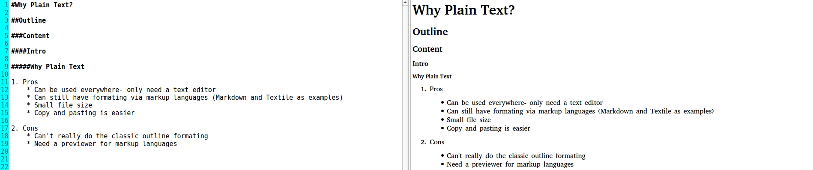
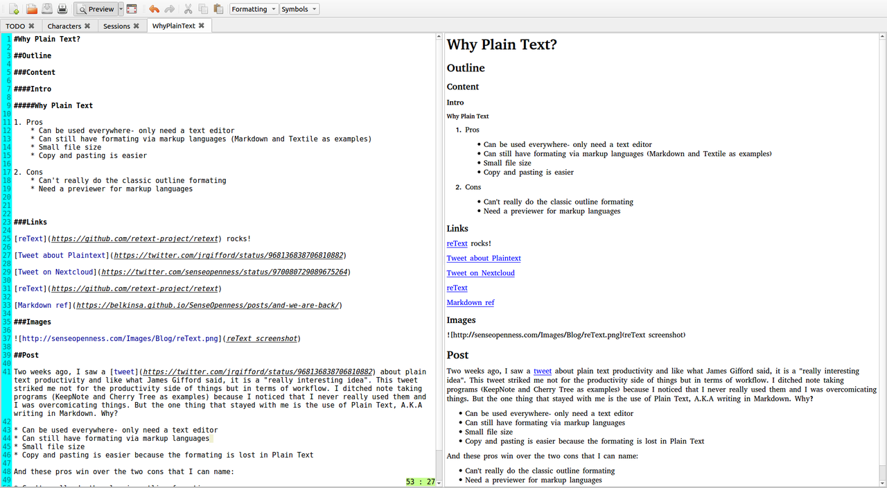

Why Plain Text?
Two weeks ago, I saw a tweet about plain text productivity and like what James Gifford said, it is a "really interesting idea". This tweet stuck out me not for the productivity side of things but in terms of workflow. I ditched hierarchical note taking programs (KeepNote and Cherry Tree as examples) because I noticed that I never really used them and I was over complicating things. But the one thing that stayed with me is the use of Plain Text, A.K.A writing in Markdown. Why?
- Can be used everywhere- only need a text editor
- Can still have formating via markup languages
- Small file size
- Copy and pasting is easier because the formating is lost in Plain Text
And these pros win over the two cons that I can name:
- Can't really do the classic outline formating. The closest that I have is this (with spaces between the lines):
Header 1
Header 2
- Ordered Item 1
(Tab or four (4) lines) Unordered Item 2
Example:

This outline system allows you to write content without using classic outlining formating if you want to write longer items for each points without making it hard to read.
- The need for a previewer for markup languages
Recently I found a Markdown editor/live previewer called ReText which, to me, is better than GitHub's Atom or QOwnNotes.
The reason, over Atom, is ReText dedicated for Markdown but you can still open other plain text files. Atom is also really meant for developers. Over QOwnNotes, ReText is not a hierarchical note taking program.
This is how I draft in Markdown in ReText: 
It seems that working in the Open is allowing me to think in different ways of how to do thing and this is one example.
EDIT TO ADD: I forgot to talk about that Plain Text formats don't change over versions of programs and the formats are mostly Open.